Description
Ce plugin iCalendar vous permet de récupérer les événements d’un agenda gérant le format de fichier iCalendar, dans un fichier .ics :
-
soit en téléchargement d’un fichier ics (google, zimbra, outlook, …)
-
soit en Caldav (lecture seule pour l’instant avec cache locale sur la période de synchro)
L’utilisateur dispose de 3 modes de fonctionnement :
-
tester la présence de l’évènement et l’état de celui-ci via une condition dans un scénario (utilisation de l’opérateur "matches" pour savoir si une chaîne de caractères en contient une autre).
-
définir au niveau des l'événement des "scénario" ou "action" qui pourront être automatiquement lancé par jeedom, soit en début ou en fin d'événement.
-
reconnaissance d’une "interaction" sur le contenu du titre ; après à vous de définir les actions produites par l’intéraction.
Configuration
Ce plugin permet de retourner les évènements de votre agenda iCalendar, il suffit pour cela de créer un équipement et de lui ajouter autant de "commandes" que vous avez d’agenda à traiter. Même s’il y beaucoups de paramètres, la configuration du plugin est simple : les paramètres par défaut peuvent être conservés, ce qui facilite la création.
Vous pouvez l’utiliser pour l’affichage d’agenda tout simplement ou pour récupérer des agendas vous permettant de réaliser des actions dans votre installation Jeedom.
Installation et configuration du plugin
Après téléchargement du plugin, vous devez l’activer pour profiter de ces fonctionnalité.
Des paramètres de configuration vous sont proposés, mais les valeurs par défaut peuvent être conservées.
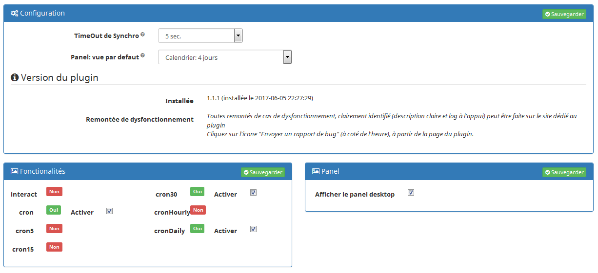
| Paramètre | Type | Description |
|---|---|---|
TimeOut de syncrho |
Zone de liste |
Cette option vous permet de définir le temps que vous souhaité laissé au plugin pour récupérer les données issus du calendrier distant. |
Pannel: vue par défaut |
Zone de liste |
Lorsque vous allez sur l'écran "panel", cette option précise la vue qui sera affiché par défaut pour l’utilisateur. |
Afficher le panel desktop |
Checkbox |
Si coché, le panel "calendrier" sera affiché. |
Une fois l’activation réalisée, depuis la page des "équipements" vous pourrez ajouter de nouveau calendrier iCalendar.
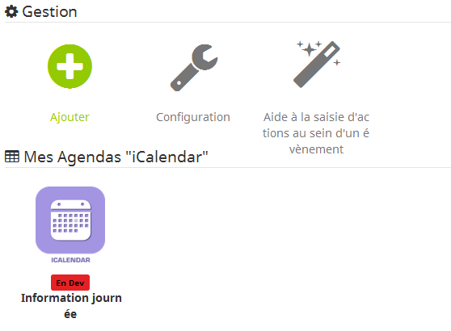
Remarque: Le bouton "Aide à la saisie d’actions au sein d’un événement" vous permet assister à la création du format à placer dans le champs description de votre événément.
Pour rappel, le lancement automatiques d’actions par le plugin n’est possible que si l’option activer les actions/scénarios est validée au niveau de votre commande agenda. (cf. Annexe 1 : "Aide à la saisie d’un évènement dans votre agenda").
Description des paramètres de l'équipement
Un bouton "dupliquer", permet de dupliquer l'équipement et les commandes associées.
L’onglet "Equipement" présente les informations standard de Jeedom :
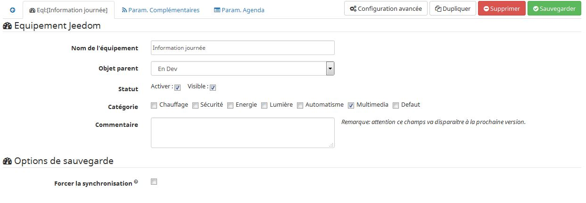
| Paramètre | Type | Description |
|---|---|---|
Nom de l’équipement |
Zone de texte |
Nom donné à votre équipement agenda iCalendar, il s’affiche sur le widget. |
Objet parent |
Liste de choix |
Associe l'équipement agenda iCalendar à un objet (permettant de définir sa position sur le dashboard) |
Activer |
Checkbox |
Si coché, active l'équipement. |
Visible |
Checkbox |
Si l’option est cochée, affiche l'équipement. |
Catégorie |
Checkbox |
Définie la catégorie à laquelle est rattaché l’agenda. |
=== Options de sauvegarde === |
||
Forcer la synchronisation |
Checkbox |
Permet de réaliser une synchronisation des données de votre agenda, au moment de l’enregistrement de l'équipement. |
L’onglet "Paramètres complémentaires" :
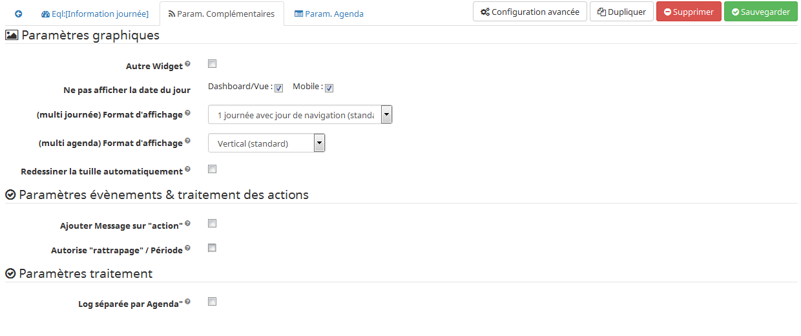
| Paramètre | Type | Description |
|---|---|---|
=== Paramètres graphiques === |
||
Autre Widget |
Checkbox |
Cette option vous permet de désactiver le widget standard du plugin et donc d’utiliser le widget jeedom ou de créer son propre widget. |
Ne pas afficher la date |
Checkbox |
Si l’option est cochée la date est masquée sur le widget; le texte "aujourd’hui : JJ MOIS AAAA (SW)" n’est pas affiché pour le Dashboard et les vues. |
(multi journée) Format d’affichage |
Zone de liste |
Définie le format d’affichage des calendriers (si plusieurs journées sélectionnées). |
(multi agenda) Format d’affichage |
Zone de liste |
Définie le format d’affichage des calendiers, soit en mode verticale (standard) ou en mode horizontale. |
Redessiner la tuille automatiquement |
Checkbox |
Permet de redimensionner automatiquement la tuille au niveau du dashbord desktop ou mobile, si le nombre d'évènement change. |
=== Paramètres événements === |
||
Ajouter Message sur "action" |
Checkbox |
Cette option permet d’ajouter un message à la boite des messages jeedom, dans le cas où le plugin a déclenché une action, un scénario ou une intéraction. |
Autorise "Rattrapage" / Période |
Checkbox |
L’activation de cette option permet de pouvoir lancer des actions/scénario/intéraction, mais si l’heure exacte de l'événement est dépassé. |
=== Paramètres traitement === |
||
Log séparée par Agenda |
Checkbox |
Permet de séparer les fichiers de log des agendas (pour une meilleure lecture en mode débug). |
Description des paramètres des agendas
Les agendas peuvent être triés par ordre d’affichage, en cliquant sur l’icône "double flêches" en haut à gauche et en déplaçant le tableau de haut en bas.
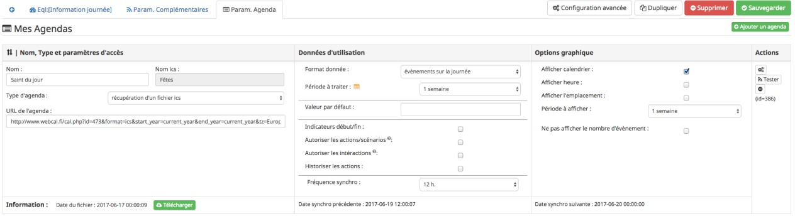
| Paramètre | Type | Description |
|---|---|---|
=== Nom et URL === |
||
Nom |
Zone de texte |
Permet de donner un nom au calendrier ; cette valeur s’affiche dans la zone de titre du calendier sur le widget. |
Nom ics |
Zone de texte |
Nom récupéré au niveau du fichier ICS ; valeur non modifiable. |
Type d’agenda |
Zone de liste |
Vous permet de définir le type d’agenda que vous configuré et la méthode de récupération de l’ICS. Les choix possibles sont : |
URL de l’agenda |
Zone de texte |
Définit l’URL du fichier ics. Pour retrouver l’URL, voir l’Annexe 3. |
Utilisateur |
Zone de texte |
(s’affiche uniquement en "caldav") |
Mot de passe |
Zone de texte |
(s’affiche uniquement en "caldav") |
Nom agenda |
Zone de texte |
(s’affiche uniquement en "caldav") |
=== Données d’utilisation === |
||
Format donnée |
Zone de liste |
Définit le "format" à afficher au niveau du widget et contenu dans la commande ; 3 valeurs sont disponibles (cf. Annexe 4) : |
Titre uniquement |
Checkbox |
Cette option n’est disponible que si "format de donnée" = " événement courant". |
Période à traiter |
Zone de liste |
Définit le nombre de jours à traier : |
Valeur par défaut |
Zone de texte |
Valeur affichée par défaut, lorsqu’il n’y a aucun évènement dans le planning. |
Indicateurs début/fin |
Checkbox |
Permet de définir si les indicateurs de début/de fin d'évènement sont utilisés, aussi bien à l’affichage et aussi pour l’execution d’une action/scénario; |
Autoriser les scénarios/Actions |
Checkbox |
Cette option permet au plugin de lancer automatiquement les scénarios ou actions, si la description de l'événement respecte correctement le format attendue pour cette action (cf. Annexe 1 : "Aide à la saisie d’un évènement"). |
Autoriser les interactions |
Checkbox |
Cette option permet au plugin de lancer une recherche d’interaction sur la base du titre de l'événement. |
Historiser les actions |
Checkbox |
A chaque action/scénario/interaction lancé par le plugin, l’action produite est tracée (pour ne pas être relancé plus tard). |
Fréquence synchro |
Liste de choix |
L’utilisateur peut configurer la période de rafraîchissement du fichier cache (minimum 30 min) ; (cf. tableau Annexe 2). |
=== Option graphique === |
||
Afficher calendrier |
Checkbox |
Paramètre graphique ; permet de définir si le calendrier doit être affiché dans le widget. |
Afficher heure |
Checkbox |
Paramètre graphique ; permet de définir si les heures de début et de fin sont affichées dans le widget. |
Afficher heure event de 24h |
Checkbox |
Paramètre graphique ; permet de définir si les heures de début et de fin sont affichées pour les évènements durant toute la journée (24 h) dans le widget. |
Afficher l’emplacement |
Checkbox |
Paramètre graphique ; permet d’affiché l’information de lieu disponible au niveau de l'événement. |
Période à afficher |
Zone de liste |
Définit le nombre de jours à afficher sur le widget : |
Ne pas afficher le nombre d'évènement |
Checkbox |
Permet de masquer le nombre d'évènement affiché à coté du nom du calendrier. |
=== Actions === |
||
Paramètre (roue crantée) |
Permet de définir les options "Jeedom" de la commande. |
|
Tester |
Permet de tester la commande (affiche le contenu de la commande). |
|
Supprimer |
Permet de supprimer la commande et les commandes rattachées (si agenda sur plusieurs jours). |
|
Id |
Valeur de l’id de la commande ; cet id est créé après l’enregistrement de l'équipement. |
|
=== Informations de synchro === |
||
Date du fichier |
indique la date du dernier téléchargement et sauvegarde en cache du fichier ics. |
|
Date synchro précédente |
indique la date de la dernière synchronisation entre jeedom et votre agenda ics. |
|
Date synchro suivante |
indique la date de la prochaine synchronisation entre jeedom et votre agenda ics. |
|
Exemple d’un écran listant les noms des agendas CalDav
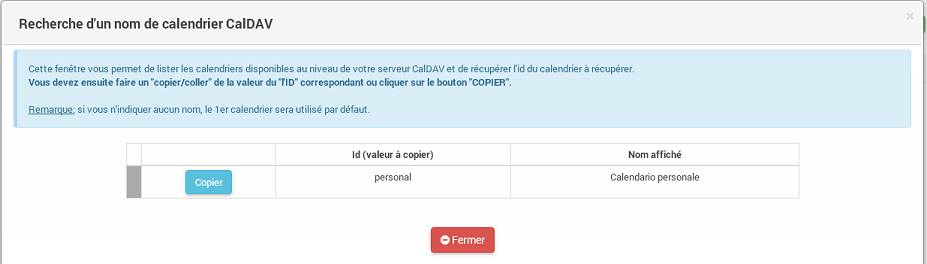
Présentation du Widget
Le widget se présente sous la forme suivante, si aucun style n’est appliqué :
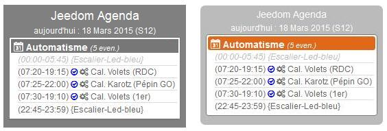
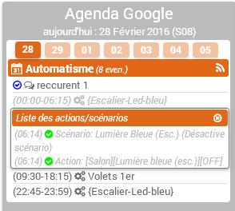 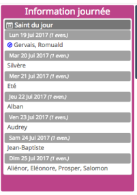
Au niveau d’un Calendrier :
-
Le nombre d'événements est affiché à coté du titre du Calendrier ;
-
En passant la souris sur le titre de l’agenda : affiche le type d’affichage, ainsi que les dates de collecte et de valeur ;
-
-
Les évènements passés sont grisés ;
-
Les évènements en cours sont repérés par une icône "Actif" (mais aussi 1ère minute et dernière minute, si l’option est active) ;
-
Les évènements à venir sont représentés sans indicateur ;
-
Les évènements identifiés avec des actions de type (Scénarios ou Actions) sont représentés par : (seulement si l’option "autoriser les scénarios/actions" est activée) :
-
Une icône "roues crantées" indique que l'événement déclenche des scénarios ou actions ;
-
en cliquant dessus, la liste des scénarios ou actions configurés en début ou fin d'événement est affichée ;
En cliquant une seconde fois, ou sur une autre roue la fenêtre d’information actuelle se masque ; -
en cliquant sur le nom du scénario ou de l’action, la page de configuration s’ouvre ;
-
une icône verte apparait sur à coté de l’action/scénario pour indiqué qu’il a bien été exécuté ;
En passant la sourie sur l’icône, il est possible de voir la date de traitement.
-
-
Une icône "bulle de BD" indique que l'événement peut déclencher une intéraction ;
-
La 2nde image montre comment il est possible de personnaliser le widget en utilisant les class (cf. Annexe 6).
Autres fonctionnalités :
-
Le widget peut être redimensionné en largeur et hauteur ; du moment que les tailles souhaitées soient supérieures à l’espace minimum prévus pour l’affiage des données. En cas de dimensionnement inférieur, un message d’erreur est affiché.
-
Vous pouvez également ré-ordonner les agendas directement via le widget (maintenez la souris enfoncée sur la zone de titre de l’agenda, et déplacer vers le haut ou le bas).
Présentation du panel : avec liste des actions historisées et visualisation de l’agenda
Vous pouvez atteindre ce menu en sélectionnant le menu "Accueil", puis "iCalendar".
Visualisation de l’agenda :
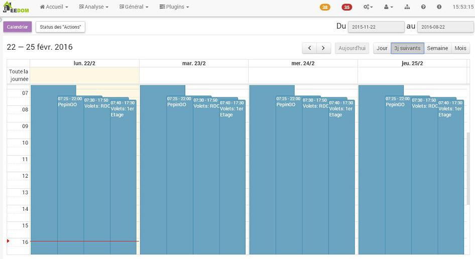
Après avoir sélectionné un agenda, vous pouvez cliquer sur le type d’affichage souhaité "Calendrier" (bouton en haut à gauche).
Vous pouvez alors parcourir votre agenda comme si vous étiez sur la version "distante" (Google, etc…).
La période d’affichage est toutefois restrainte ; elle respecte la plage suivante : les 3 mois précédents la date du jour et les 6 mois suivants.
Remarque: Cette période n’est pas paramétrage pour l’instant; elle est juste rappelée en haut à droite de l'écran.
Dans le cas de petite config, le temps d’affichage de cet écran peut être long la 1ère fois de la journée, un cache est ensuite utilisée tout au long de la journée.
En cliquant sur un événement, une fenêtre apparait, permettant d’avoir des détails complémentaires.
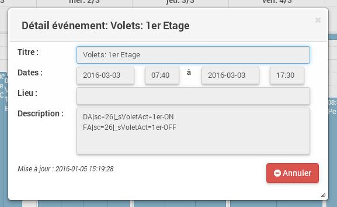
Actions historisées :
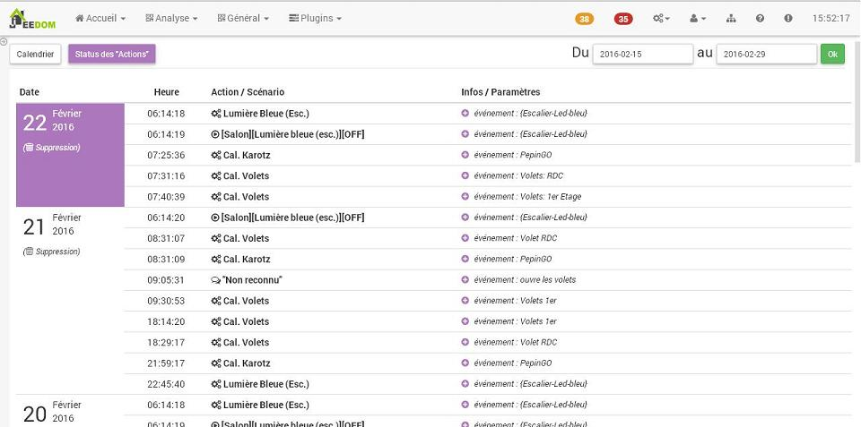
Si vous avez activer "Historiser les actions", vous pourrez retrouver dans cet écran les actions/scénarios/interactions où une tentative d’exécution a été traitée.
En haut à droite, vous pouvez définir la période de visualisation ; par défaut, les derniers jours.
La liste présente par jour, le nom du scénario ou de l’action traitée, avec son heure de traitement.
La dernière colonne permet d’avoir des informations sur l'événement associé / ayant demandé le lancement de cette action/scénario.
Dans le cas d’une intéraction, l’information affichée correspond à la "réponse" retournée par l’intéraction (mais en aucun cas son nom) ; si aucune réponse n’a été faite, il est indiqué "Non reconnu".
En dessous de la date, vous pouvez supprimer les données historisées pour cette journée.
Utilisation des données
-
Par configuration d’un événement avec valeur des "scénario/action" dans la description de l'événement :
Les scénarios et les actions/commandes (si leur id est valide et actif) sont lancés automatiquement à l’heure souhaitée. -
Par déclencheur dans un scénario :
Dans une condition IF, il faut rechercher la présence du nom de l'évènement ; on peut aussi le faire précéder de l'état. La recherche se fait en utilisant l’argument de comparaison "contient" ("matches", cf. documentation scénario).
Nom uniquement |
recherche de la présence d’un nom : cmd_iCal matches "/mon event/" |
Etat actif |
recherche d’un état actif pour un événement précis : cmd_iCal matches "/A;mon event/" |
Etat actif : 1ère minute |
recherche de la 1ère minute d’un état actif pour un événement précis : cmd_iCal matches "/;DA;mon event/" |
Etat actif : dernière minute |
recherche de la dernière minute d’un état actif pour un événement précis : cmd_iCal matches "/;FA;mon event/" |
En fonction de la version de Jeedom, l’utilisation des doubles côtes ", autours du nom de la commande peut être nécessaire ; à partir de la V2, le test doit être fait sans ces doubles côtes.
L’utilisation de l'état n’a un intérêt que si le paramètre "Format donnée" utilisé est : "événement heure à venir" ou "événement sur la journée".
REMARQUE: Lorsque l’agenda ne traite qu’un seul événément, l’utilisation du format "événement courant" avec "titre uniquement" n’est pas la seule solution.
Vous pouvez très bien utiliser également les formats "heure à venir" et "journée", en précisant le contenu exacte de l'événement.
Soit un \#[MA_CMD]#="Congé" en "événement courant", équivaut à \#[MA_CMD]# matches "/;A;Congé;/" dans un autre format (respecter bien l’utilidation des ;).
Cron et Rafraîchissement de données
Récupération des données :
Les données récupérées correspondent à une journée complète, mais sont récupérées en fonction du paramétrage défini (minimum 30 minutes); elles sont enregistrées en cache utilisé par le plugin.
Si vous faites des modifications dans votre agenda ics, ils ne seront visibles qu’au moment d’une période de rafraîchissement.
Cron :
Le système vérifie toutes les minutes en cache s’il y a des évènements, et précise l'état de l'évènement (en fonction du format choisi).
Il est donc possible de configurer/programmer des évènements à la minute près.
En l’absence d’accès internet, le cache disponible est sur l’ensemble de l’agenda configuré (et non uniquement sur la journée courante).
"Santé" des échanges réseaux
Afin de vous permettre d’avoir une vision sur la validité des synchronisation, une information est remontée au niveau de la page "Santé".
Dans la session "iCalendar", vous pouvez voir pour chacun de vos agendas, l'état des 15 dernières synchro réalisées:
-
Si la synchro s’est correctement déroulée, un
oest affiché. -
Si la synchro a rencontré un problème réseau (non accès à l’url), une
Xest affichée.
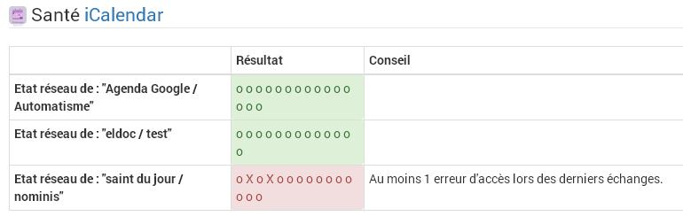
L’ordre de lecture de ces états est le suivant : le 1er de la liste correspond au test de synchro le dernier en date ; la dernière information de la liste correspond à l'état le plus ancien connu.
Ces états sont renseignées à chaque synchro (soit à chaque période définie dans votre configuration de l'équipement, ou au moment de l’enregistrement de l'équipement si vous avez forcée la synchro).
Annexes
Annexe 1 : Aide à la saisie d’un évènement "Action" (scénario ou commande action) dans votre agenda
Ce paragraphe vous explique comment configurer un évènement agenda pour permettre de lancer automatiquement les scénarios ou des commandes actions.
Pour que le plugin reconnaisse que l'évènement est de type "Action", il doit se présenter sous une forme particulière au niveau du champs "description" de l'événement.
-- Cas du format "Scénario" :
Le format attendu doit être du type : période (DA ou FA)|sc=id du sénario|nom de la variable=valeur de la variable
exemple : DA|sc=3|varVolet=ON , pour action à la 1ère minute (DA), lancement du scénario id="3", et passage de variable au scénario (variable "varVolet", avec la valeur "ON").
Il est aussi possible d’activer ou désactiver un scénario par ce procédé ; ces valeurs sont présentes en fin de liste des choix "nom de la variable".
En saisie manuelle, mettre : "#active" pour activer le scénario ou "#desactive" pour désactiver le scénario.
Par contre, ne pas mettre de valeur de variable pour que cette action soit prise en compte.
exemple : DA|sc=3|#active
Remarque: ces 2 actions ne permettent pas de lancer le scénario, mais juste agir dessus.
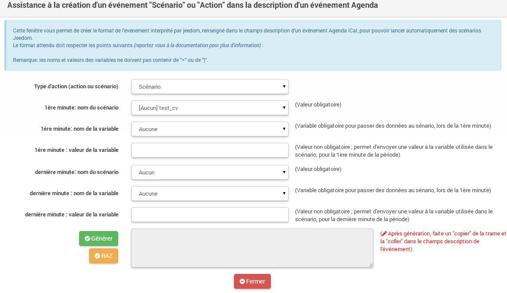
| Champs | Description |
|---|---|
Type d’action |
Définie le type d’action à produire (commande action ou scénario), ici "Scénario" |
1ère minute : nom du scénario |
Sélectionner le scénario à exécuter depuis l'évènement à la 1ère minute. |
1ère minute : nom de la variable |
Sélectionner le nom de la variable à utiliser pour un traitement au niveau du scénario ; cette variable sera utilisée pour faire transiter les informations définies au moment de la 1ère minute. |
1ère minute : valeur de la variable |
Valeur à passer à la variable lors du démarrage de l'événement (1ère minute), lors de l'état ;DA;. |
dernière minute : nom du scénario |
Sélectionner le scénario à exécuter depuis l'évènement à la dernière minute. |
dernière minute : nom de la variable |
Sélectionner le nom de la variable à utiliser pour un traitement au niveau du scénario ; cette variable sera utilisée pour faire transiter les informations définies au moment de la dernière minute. |
dernière minute : valeur de la variable |
Valeur à passer à la variable à la fin de l'événement (dernière minute), lors de l'état ;FA;. |
valeur générée |
Après avoir cliqué sur le bouton "Générer", cette zone représente la syntaxe générée en fonction des valeurs définies ci-dessus. |
-- Cas du format "Action" :
Le format attendu doit être du type : période (DA ou FA)|act=commande(id ou nom)|option de commande=valeur
exemple : FA|act=[obj][equipment][cmd]|slider=4 , pour action à la dernière minute (FA), lancement d’une commande action "cmd" de l'équipement "equipement", et passage de la valeur 4 (commande de type "slider").
Remarque : les options de commande sont dépendant de la commande utilisée et donc ne sont pas obligatoires.
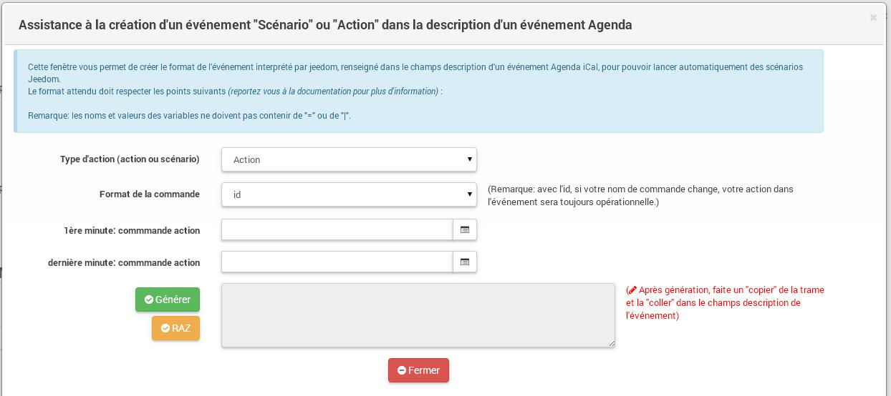
| Champs | Description |
|---|---|
Type d’action |
Définie le type d’action à produire (commande action ou scénario), ici "Action" |
Format de la commande |
Définie si la valeur de l’ID est positionné ou le format de commande Jeedom (soit [obj][equip][cmd]). |
1ère minute : commande action |
Sélectionner le nom de la commande à utiliser à la 1ère minute. |
dernière minute : commande action |
Sélectionner le nom de la commande à utiliser à la dernière minute. |
-- Opération à réaliser :
-
Une fois, les informations renseignées, cliquez sur le bouton "Générer".
-
La zone grise est complétée, copiez là (ctrl + C).
-
Collez (ctlr + V) l’information dans le champs DESCRIPTION d’un évènement de votre agenda.
REMARQUE: les anciens formats de trames au niveau du titre sont encore supportés par le plugin, mais seront bientôt supprimé du plugin au profit de cette nouvelle gestion.
Pensez à modifier vos configurations pour un traitement avancé du plugin et sa maintenance future.
Annexe 2 : Fréquence de rafraîchissement
| Valeur | Heure du rafraîchissement |
|---|---|
30 min. |
Aux minutes : 00, 30, de chaque heure. |
1 h. |
A la minute : 00, de chaque heure. |
3 h. |
A : minuit (00h), 3h, 6h, 9h, 12h, 15h, 18h, 21h. |
6 h. |
A : minuit (00h), 6h, 12h, 18h. |
12 h. |
A : minuit (00h) et midi (12h) |
24 h. |
Unique à minuit (00h) |
Remarque : en dehors de ces horaires, aucun rafraîchissement n’est réalisé.
Annexe 3 : URL privée des agendas Google
Une fois connecté à l’agenda Google, vous pouvez récupérer l'URL PRIVEE de votre agenda comme ceci.
-
Cliquez sur le nom de l’agenda que vous souhaitez récupérer sous Jeedom et choisir le menu "Paramètres de l’agenda" ;
-
Allez à la session "Adresse URL Privée" et cliquer sur "ICS" ;
-
La popup s’ouvre et présente l’URL à copier dans Jeedom ;
Annexe 4 : Format des données (Widget et structure des commandes)
Lorsque la synchronisation est réalisée, le plugin va positionner au niveau de la commande agenda, les informations des événements de votre calendrier pour la journée courante.
Il existe 2 formats :
-
version "simple" (diponible pour "événement courant", avec titre uniquement à OUI) :
-
chaque évènement est séparé par des "||" ;
-
la donnée ne contient que les titres des événements, aucune autre information "technique" n’est présente dans la commande ;
-
-
version standard/complète (pour tout autre paramétrage) :
-
chaque évènement est séparé par des "||" ;
-
les données au sein d’un évènement sont séparés par des ";" (point-virgule) ;
-
les données disponibles sont :
-
heure_début;heure_fin;statut;titre de l'événement;uid;doAct/doInter;date_update;location -
où heure_début, et heure_fin sont des bornes de l'événement pour la journée courante ;
-
statut : définie l'état de l'événement à l’instant T; pouvant prendre les valeurs : vide (à venir), DA (1ère minute), A (actif) ,FA (dernière minute), P (passé) ;
-
uid : est l’idée technique de l'événement (utilisée pour la liaison avec des données techniques en caches) ;
-
doAct/doInter : définie si cet événement présente des commandes actions ou scénarios à éxecuter en début ou fin d'événement ; ou une intéraction en début d'événement.
-
date_update : correspond au timestamps update de l'événement ;
-
location : correspond au lieu de l'événement s’il est définie dans votre agenda.
-
-
Remarque :
-
le plugin sait gérer différents formats d'évènement :
-
heure au sein d’une journée (ex : 23/02 de 10h à 11h) ;
-
journée complète (ex : 23/02, généralement décrit 23/02 0h à 24/02 0h) : sera transformé en 23/02 0h-23h59 au niveau de la commande et du widget
-
plusieurs journées (ex : 23-25/02) : sera transformé en fonction du jour : 23/02 0h-23h59 , 24/02 0h-23h59, 25/02 0h-23h59
-
plusieurs journées avec horaire (ex : 23/02 à 10h et 25/02 à 14h) : sera transformé en fonction du jour : 23/02 10h-23h59, 24/02 0h-23h59, 25/02 0h-14h
-
Annexe 5 : Données des évenements au niveau des scénarios via "fonctions"
Pour rappel, une commande agenda retourne des données brutes restectant les formats de données décrits au niveau de l’annexe précédente.
Toutefois une commande complémentaire est disponible au niveau de chaque "agenda", nommé _nom de la commande agenda_ (ExecuteFunction-_idCommande_)
Cette commande disponible au niveau des scénarios est de type "message" et est composé d’un nom de fonction (titre) et d’argements (message).
Après avoir sélectionné cette commande dans une action de scénario, tapez la lettre "g" dans la zone "fonction", les fonctions disponibles apparaitront (avec en mémo, un rappel de l’utilisation au niveau des arguments).
L'événement recherché ne peut être que sur la journée courante et doit être en cours ou à venir. Les événements passés ne peuvent plus être analysés.
Le titre passé en argument doit être exacte également (exemple : absence) ; la fonction "contient" n’est pas encore mise en place.
Si plusieurs titres correspondent, le 1er est retourné.
fonction |
description |
arguments |
getTimeStart |
donne l’heure de début de l'événement choisit |
- en 1ère ligne : mettre le titre de l'événenement à rechercher, le texte doit être exacte ; |
getTimeEnd |
donne l’heure de fin de l'événement choisit |
- en 1ère ligne : mettre le titre de l'événenement à rechercher, le texte doit être exacte ; |
getUid |
donne l’id technique de l'événement choisit |
- en 1ère ligne : mettre le titre de l'événenement à rechercher, le texte doit être exacte ; |
getTitle |
donne le titre de l'événement choisit en fonction d’un id |
- en 1ère ligne : mettre l’id (uid) de l'événenement à rechercher, le texte doit être exacte ; |
getLocation |
donne le lieu de l'événement choisit en fonction d’un id ou d’un titre |
- en 1ère ligne : mettre le titre de l'événenement à rechercher, le texte doit être exacte ; |
getDaySimple |
retourne une trame simplifiée de tous les événements de la journée courante (quelque soit le statut de l'événement). |
aucun (zone laissée vide) |
getDayTitleOnly |
retourne une trame simplifiée avec tous les événéments de la journée courante (quelque soit le statut de l'événement). |
aucun (zone laissée vide) |
getDayActifOnly |
retourne une trame simplifiée avec uniquement les événéments actif de la journée courante. |
aucun (zone laissée vide) |
getDayActifAndTitleOnly |
retourne une trame simplifiée avec uniquement les événements actif de la journée courante. |
aucun (zone laissée vide) |
Les commandes actions ne retournent pas de valeur, le résultat de la fonction sera donc placée dans une variable de scénario, prenant la forme : nomDeLaFonction_IdCommandeAgenda (exemple: getTimeStart_13456).
Pour éviter toute erreur, cet id est rappelé dans le nom de la commande fonction.
Par ailleurs, le traitement étant asynchrone, tout au long du traitement de la commande/fonction la variable de retour est positionnée à "-99".
Dès lors que cette variable passe à une autre valeur, cela signifie que la fonction a termné son traitement.
Si la fonction n’a rien trouvé ou a rencontré une erreur, la valeur de retour de non traitement est "-1".
Remarque pour les fonction "getDay…":
1/ pour l’utilisation de ces fonctions, il est consillé d'être dans un format de donnée différent de "événement courant".
En effet, ce format étant déjà très limité, ces fonctions spécifiques de formatage de la trame pourraient ne pas s’appliquer.
Si ce cas s’applique, le retour prendra la valeur "-1" et un message d’erreur sera précisée dans la log.
2/ le séparateur entre les événements est un double pipe "||".
Si vous souhaitez utiliser un autre séparateur pour de l’affichage dans un mail par exemple, vous pouvez faire un changement de caractère comme suite (ici retour à la ligne) :
str_replace("||", "\n", variable(getDaySimple_123))
Processus d’utilisation dans un scénario :
-
1/ Sélectionner votre commande agenda permettant d’excuter des fonctions au niveau d’une zone "action".
-
2/ Dans la zone "fonction", taper "get" et sélectionner dans la liste la fonction souhaitée (cf. ci-dessus).
-
3/ Ajouter une commande action avec la fonction "wait" ;
Remarque: les temps de réponses des fonctions sont relativement rapide, mais il est préférable d’avoir une tempo pour s’assurer que la valeur retournée est bien celle attendue, pour la suite du scénario.
La saisie doit être du type :variable(getTimeEnd_12345) != -99, (avec un timeout de 5sec par exemple). -
4/ une fois cette condition passée, vous pouvez utiliser votre variable dans la suite du scénario.
Remarque: Il est conseillé de faire d’abord un test sur la pertinence de votre variable : autre que "-1".
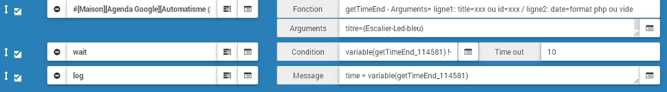
Annexe 6 : Les classes CSS disponibles
Vous pouvez utiliser 3 paramètres au niveau des options de la tuille de l’agenda pour gérer les couleurs :
bgTitleColor |
Couleur de fond de la zone de titre (nom de l’agenda, et zone actions) |
bgItemColor |
Couleur de fond de la zone de liste (événements et actions) |
Mais pour les utiliseurs qui veulent aller plus loin dans la configuration, voici les classes CSS disponibles pour personnaliser le widget du plugin :
iCalendar_title |
Zone de titre de la tuile |
iCalendar_date |
Zone de date de la tuile |
iCalendar_calTitle |
Zone de titre de l’agenda |
iCalendar_items |
Zone d’information principale |
iCalendar_itemActif |
évènement "Actif" (en cours) |
iCalendar_itemInactif |
évènement "Inactif" (passé ou à venir) |
iCalendar_zoneListAct |
Sur fenêtre affichant la liste des actions / scénarios |
iCalendar_titleListAct |
Zone de titre de la liste des actions / scénarios |
FAQ
Peut-on avoir les futurs évènements ?
Avec les valeurs "événement heure à venir" et "événement sur la journée" du paramètre "format donnée" : oui d’un point de vue affichage sur le widget.
Par contre, le traitement de futurs évènements n’est pas possible (ils ne sont présents qu’en terme d’affichage), sauf si vous parcer les informations.
J’ai modifié mon agenda et l'évènement n’apparaît pas…
Le rafraîchissement du cache est réalisé en fonction du paramétrage que vous avez configuré (minimum 30 min).
Toutes modifications sur l’agenda n’apparaîtront sur le plugin iCalendar qu’aux heures fixes liées à la configuration définies (cf. doc).
Mais il est possible de forcer cette synchronisation au moment de l’enregistrement de l’agenda (équipement).
Quelle période de l’agenda est affichée dans le widget ?
La récupération des données et l’affichage dans le widget ne traitent que des données de la journée courante.
Si l'évènement fait plus d’une journée, les heures de début et de fin sont présentées uniquement pour la journée en cours.
(exemple si l'évènement est configurée sur jour1 10h - jour2 10h; le jour 1, il sera affiché: 10h-23h59 et jour2: 0h-10h)
Même pour une configuration en "heure suivante", les informations seront affichées uniquement jusqu'à 23h59.
Les bornes sont-elles incluses ?
L’heure de début est incluse : la 1ère minute est "active" et remonte l’information ;DA; (exemple: 10h-18h: 10h00 contient ;DA;)
L’heure de fin n’est pas incluse dans la période d’activité, c’est la dernière minute précédente qui présente l’information ;FA; ; sauf pour 23h59.
(exemple 1 : 10h-18h: 17h59 contient ;FA;, à 18h00 l'évènement est terminé et non actif, ;A; n’est plus présent).
(exemple 2: 19h-0h: l’heure de fin est convertie en 23h59 et contient ;FA;, à 0h l'évènement est terminé et non actif, ;A; n’est plus présent).
Sur la version mobile, je ne vois pas les évènements passés en affichage journée…
Sur la version mobile, seuls les évènements en cours et à venir sont affichés. Même en mode journée, les évènements passés ne sont plus affichés (contrairement à l’affichage dashboard).
J’ai des messages d’erreur du type "La commande action : [objet][equipement][cmd], est inconnue pour l événement suivant : mon titre événement. Revoir la configuration de votre événement" qui s’affiche au niveau de la messagerie Jeedom ?
L’id ou le nom de la commande, ou l’id du scénario que vous déclaré en tant qu’action dans votre événement n’existe pas (ou plus) dans Jeedom. Vous devez vérifier si vous n’avez pas modifié cette commande/scénario et faire la modification dans votre événement au niveau de votre agenda.
Existe-il un agenda des jours fériés ?
Oui il existe un agenda google qui liste les jours fériés, l’URL est la suivante (ici pour la France) :
https://calendar.google.com/calendar/ical/fr.french%23holiday%40group.v.calendar.google.com/public/basic.ics
Remarque : par contre, ce calendrier présente aussi des évènements (comme la fête des mères) qui ne sont pas des jours fériés … :(
Troubleshoting
====Mes scénarios réagissent à des évènements passées ou futurs (mode prochaine heure ou journée) Dans l’analyse de la trame, il faut vérifier que vous êtes sur un évènement actif; en vérifiant que ;A; est présent. (exemple : "…" matches "/;A;mon event/"). Voir la documentation pour plus d’explications.
Roadmap
-
modification d'événement via jeedom (sans synchro avec le serveur distant dans le mode téléchargement ics) ;
-
gestion des événements + Todo (modif, création, supression) pour le mode CalDav ;
-
définir un offset à l'événement sur heure de début ou de fin ;
-
mise en place de la synchro via un daemon ;
Version documentaire
Mise à jour le : 27 février 2016